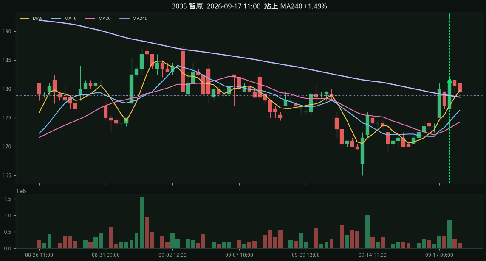

#1 · 3035 智原2026-09-17 09:00
+6.11%
close 180.00 站上 MA240 +0.49% MA5 174.60 > MA10 172.70 > MA20 172.35 MA240 179.13 fwd +1d +6.11% +3d +12.78% +5d +14.72%

90d · 3035 智原 · Yahoo 6mo 1h · 基準日 20261002 · 1 檔 · 成交額末名約 10.5 億
智原型小時 K：MA5>MA10>MA20，且當下這根收盤才站上 MA240（至少高出一個跳動點；上一根還沒站上）。已經站在上面、只是短均才排好的不算。貼線不到 1 檔不算。
卡片右上是訊號後下一個交易日收盤報酬（還沒走完就顯示站上 MA240 幅度）。
close 180.00 站上 MA240 +0.49% MA5 174.60 > MA10 172.70 > MA20 172.35 MA240 179.13 fwd +1d +6.11% +3d +12.78% +5d +14.72%
close 181.50 站上 MA240 +1.49% MA5 177.10 > MA10 174.30 > MA20 173.20 MA240 178.83 fwd +1d +5.23% +3d +11.85% +5d +13.77%
